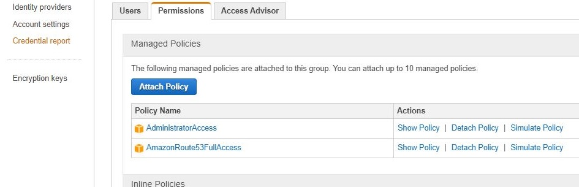
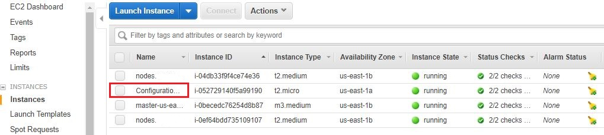
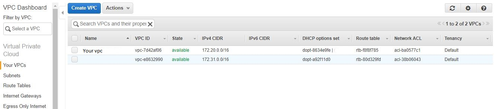

How to Setup Kubernetes Cluster on AWS Using KOPS - Full Guide
What is Kubernetes?
Kubernetes is an open-source platform originally designed by Google for automating deployment, scaling, and ochestrating operations of application containers across clusters of hosts, providing container-centric infrastructure. It has many features especially useful for applications running in production like service naming and discovery, load balancing, application health checking, horizontal auto-scaling or rolling updates.
To get started lets get a brief understanding of important concepts around Kubernetes.
-
container - A conatiner image is a lightweight, stand-alone, executable package of a piece of software that includes everything needed to run it: code, runtime, system tools, system libraries, settings. Containerized software will always run the same, regardless of the environment (Linux/ Windows/ Mac).
-
Pod – A pod is a group of one or more containers (such as Docker containers), with shared storage/network, and a specification for how to run the containers.
-
Service – A set of pods that work together. By default a service is exposed inside a cluster but it can also be exposed onto an external IP address outside your cluster. We can expose it using one of four available behaviors:
ClusterIP,NodePort,LoadBalancerandExternalName. -
Replication Controller – A ReplicationController ensures that a specified number of pod replicas are running at any one time. In other words, a ReplicationController makes sure that a pod or a homogeneous set of pods is always up and available.
In this post, we will learn how to setup kubernetes cluster on AWS using KOPS (kubernetes operations). I will begin at instance creation to setting up the environment for installation and finish by testing the cluster using an nginx image. The assumption is that you have access to a AWS account setup. Otherwise visit Amazon to create an account.
Creating 7 configuring an instance to run the installation
-
Create a t2.micro (Falls under free tier) instance running an Ubuntu Amazon Machine Image (AMI). You can skip this step if you want to do it from your pc.
-
Install python and pip:
sudo apt install python-pip -
Install AWS Cloud Line Interface (CLI)
pip install awscli --upgrade --userVerify if CLI is installed by running
aws –versionYou should get something similar to: aws-cli/1.14.32 Python/2.7.12 Linux/4.4.0-1047-aws botocore/1.8.36 -
Create group and a user and add give them access to Route53 and full Admin access. Instead of adding thee Admin access you can add AmazonEC2FullAccess, AmazonRoute53FullAccess, AmazonS3FullAccess, IAMFullAccess, AmazonVPCFullAccess to limit the access to only the required resources. When setting the permissions, make sure to download the keys because you will need to export them as environment variables in the config server otherwise your CLI will not work.

-
Configure CLI by exporting the keys and default region
export AWS_ACCESS_KEY_ID=XXXXXXXXXXXXXXXXXXexport AWS_SECRET_ACCESS_KEY=XXXXXXXXXXXXXXXXXXXXXXXXXXXXXXXXexport AWS_DEFAULT_REGION=us-east-1Note that the above commands will save the environment variables temporally and the next time you log into the server you will have to re-configure them.
These can be saved permanently in the server by adding them into the
.profilefile in your desktop. To see the changes restart the server withsudo shutdown -r now -
Install kubectl
curl -LO https://storage.googleapis.com/kubernetes-release/release/$(curl -s https://storage.googleapis.com/kubernetes- release/release/stable.txt)/bin/linux/amd64/kubectlchmod +x ./kubectlsudo mv ./kubectl /usr/local/bin/kubectlNote: The above command installs the latest version of kubectl
-
Install Kubernetes Operations(KOPS)
Use this to download a specific version of kops
wget https://github.com/kubernetes/kops/releases/download/1.6.1/kops-linux-amd64Use this to get the latest version - Recommended:
curl -LO https://github.com/kubernetes/kops/releases/download/$(curl -s https://api.github.com/repos/kubernetes/kops/releases/latest | grep tag_name | cut -d '"' -f 4)/kops-linux-amd64chmod +x kops-linux-amd64sudo mv kops-linux-amd64 /usr/local/bin/kops -
Generate ssh keys in the server
ssh-keygen -t rsa -b 4096 -C "[email protected]" -f $HOME/.ssh/id_rsa -N ""List the keysls ~/.ssh/id_rsa*
AWS Configuration
1.Create Route53 domain for the cluster by creating a new hosted zone. It's preferred if you have a public domain name but if you don't have one you can create a private one on Route53 that will be used internally by the cluster.

-
Create a S3 bucket from the configuration server CLI if you haven’t created one manually
aws s3 mb s3://mybucket.com. This bucket acts as a storage for the kubernetes cluster configurations. If you want to use AWS dashboard.
Creating a Kubernetes Cluster
-
Save the storage bucket as an environment variable
export KOPS_STATE_STORE=s3://mybucket.comTest the existence by runningecho $KOPS_STATE_STORE. Remember that you are running these commands in thee configuration server now. -
Use --dns private if your domain name is not public
kops create cluster --cloud=aws --zones=us-east-1b --name= k8.mycluster.com --dns-zone=mydns.com --dns privateNOTE: Make sure you have ssh keys already generated otherwise the above command will throw an error. -
Run this command to actually create the cluster --yes prints out the results of the command
kops update cluster k8.mycluster.com --yesThis will create the VPC, subnets, autoscaling-groups, nodes etc. which you can observe from AWS dashboard. Master note and slave instances 
Autoscaling group

Cluster VPC 
-
You can then edit the cluster settings with one of these commands: List clusters with:
kops get cluster k8.mycluster.comEdit this cluster with:
kops edit cluster k8.mycluster.comEdit your node instance group:
kops edit ig --name=k8.mycluster.com nodesEdit your master instance group:
kops edit ig --name=k8.mycluster.com master-us-east-1d -
It takes quite some time for the instances to boot and the DNS entries to be added in the zone. Once everything is up you should be able to get the kubernetes nodes:
kubectl get nodes -
To enable the Kubernetes UI you need to install the UI service:
kubectl create -f https://rawgit.com/kubernetes/dashboard/master/src/deploy/kubernetes-dashboard.yaml. In case you have errors running this command, check the verison of Kubernetes and kops you are running. They must be compatible. -
You can use the kubctl proxy to access the UI from your machine if you run your installations locally. Run
kubectl proxy --port=8080 &.The UI should now be available athttp://localhost:8080 -
To delete the cluster run
kops delete cluster k8.mycluster.com –yes
Deploying Nginx Container for Testing
To test the Kubernetes cluster, we will deploy a simple service made up of some nginx containers
-
Create an nginx deployment:
kubectl run nginx-app --image=nginx --replicas=2 --port=80kubectl get podskubectl get deployments -
Expose the deployment as a service. This will create an ELB in front of those 2 containers and allow us to publicly access them:
kubectl expose deployment nginx-app --port=80 --type=LoadBalancerkubectl get services -o wideThis command will provide a url to an ELB running nginx containers.

-
You can now view the UI by accessing master node (using the public IP). This will require you to provide credentials. Run command
kubectl config viewto see the credentials.
I hope this blog gives a quick introduction into kubernetes to get you started with your deployments.
Read more on how you can leverage Microservice Architecture for your software designs.
Happy coding!
To make a comment you have to login
0 Comments